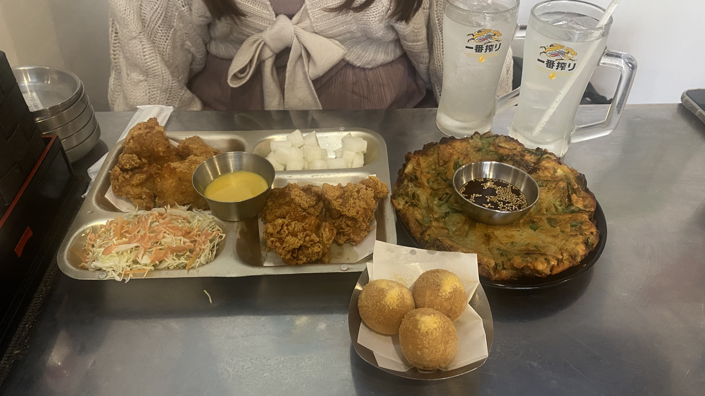
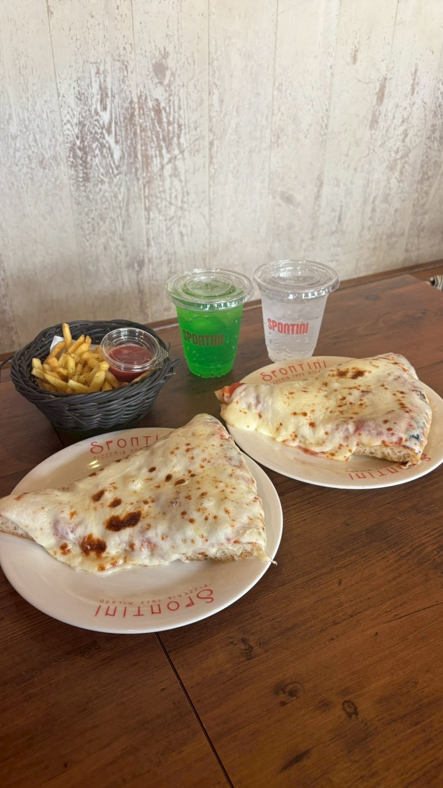
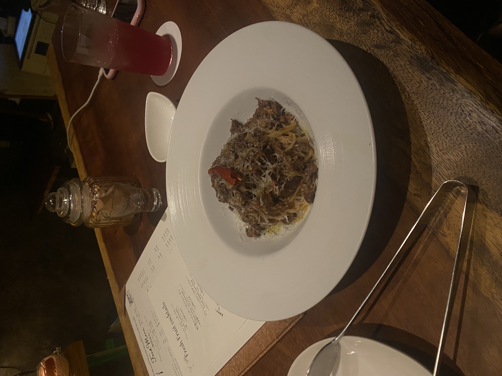
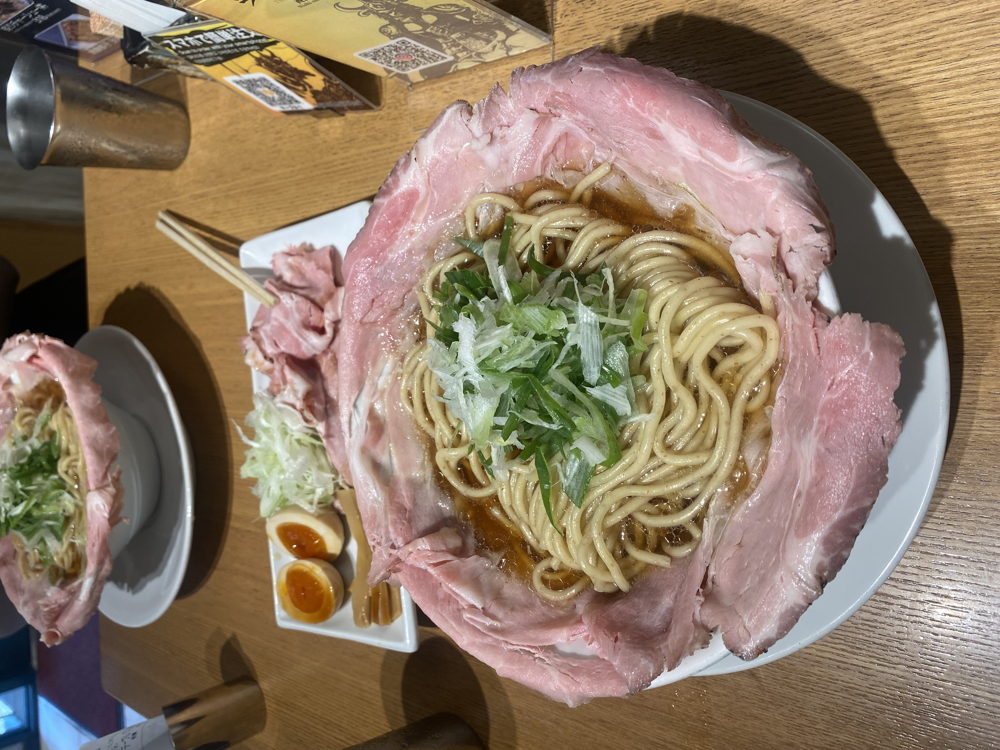
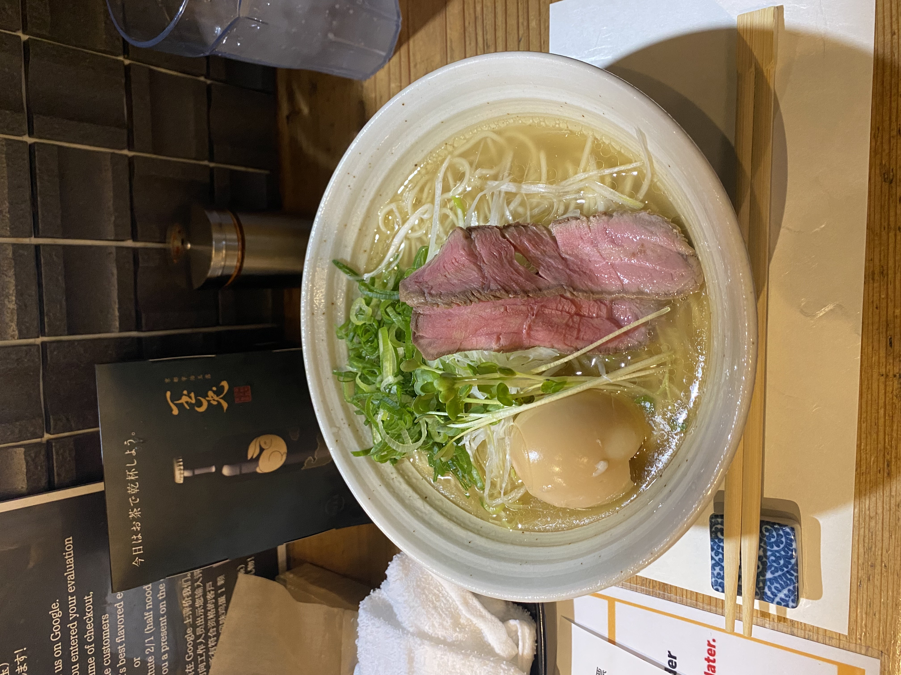
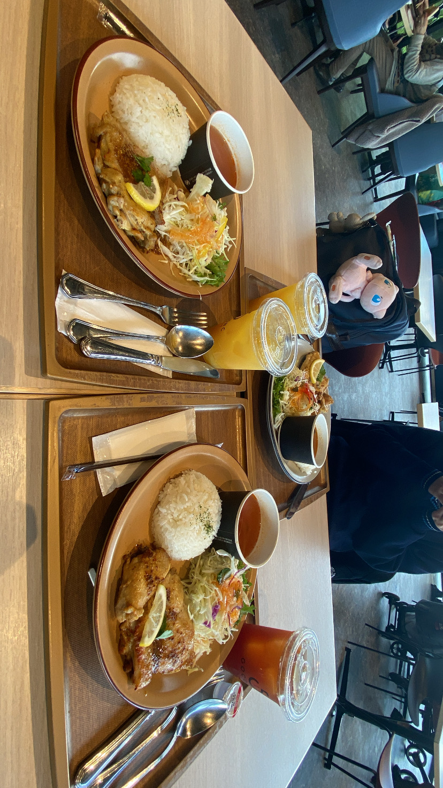
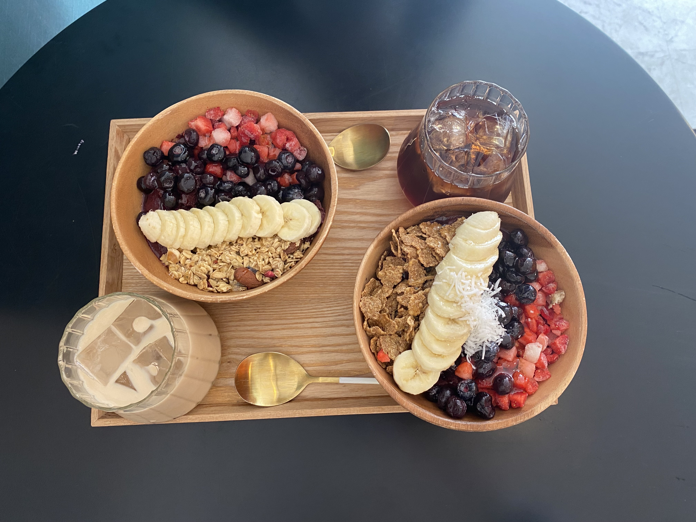

じゃんけん
ここにじゃんけんの結果が表示されます
東京
| 日付 | お店の名前 | 場所 | 食べたもの |
|---|---|---|---|
| 2026.2.10 | 韓国酒場マショマショ＆マショチキン 八王子店
 |
〒192-0085 東京都八王子市中町７−１０ 紅洋 ビル １F | チヂミ、チキン、チーズボール |
| 2026.6.16 | SPONTINI カスケード原宿店
 |
〒150-0001 東京都渋谷区神宮前１丁目１０−３７ CASCADE HARAJUKU 2F | DOUBLE MOZZARELLA CHEESE |
| 2026.7.18 | ミュスカ（ワインとお食事）
 |
〒161-0032 東京都新宿区中落合１丁目１３−３ | ラグーソースパスタ“赤” |
| 2026.7.19 | ラーメン大戦争 西新宿店
 |
〒160-0023 東京都新宿区西新宿８丁目１９−１ 112 | 関西だし醤油ラーメン ピストル |
京都
| 日付 | お店の名前 | 場所 | 食べたもの |
|---|---|---|---|
| 2023.10.28 | 祇園らーめん 京都本店
 |
〒605-0073 京都府京都市東山区祇園町北側２８０ | 牛塩らーめん |
| 2024.3.13 | GOCONC 京都リサーチパーク店
 |
〒600-8815 京都府京都市下京区中堂寺南町 栗田町91 京都リサーチパーク10号館1F | ハニーマスタードチキンコンフィ |
| 2024.10.21 | ggg.
 |
〒600-8899 京都府京都市下京区西七条赤社町３２ コーポ御前 101 | アサイーボウル |